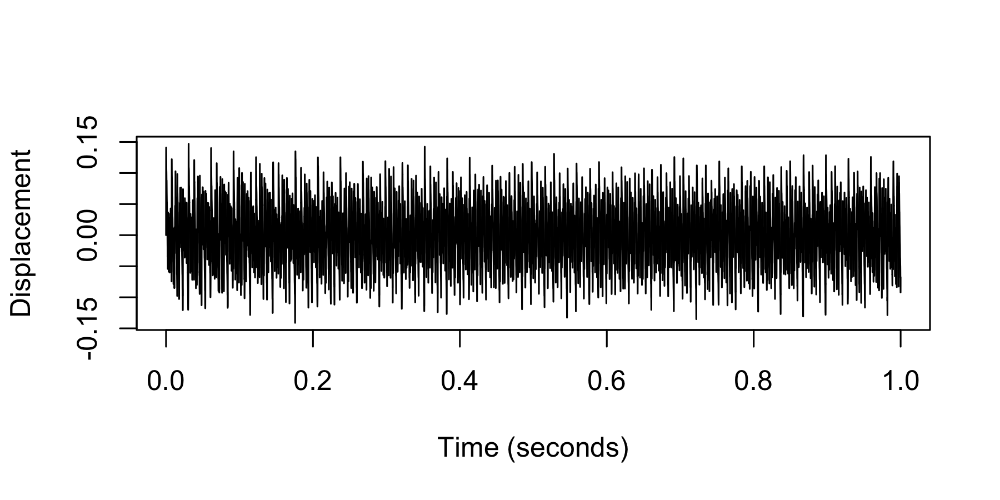
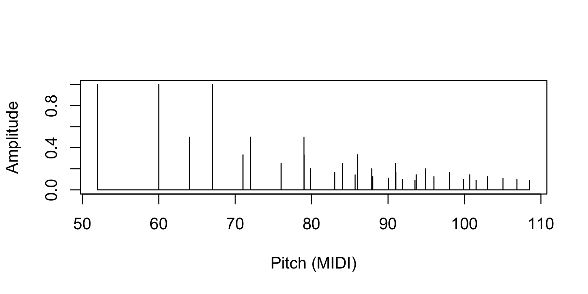
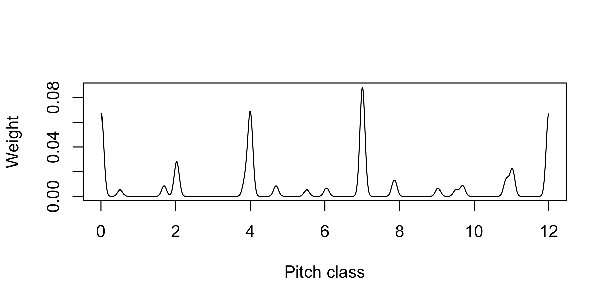

The hrep R package provides utilities for representing and manipulating chord sequences for perceptually informed harmony modelling. The available representations include symbolic representations, acoustic representations, and sensory representations. Integer encodings are defined for several symbolic representations, allowing the user to efficiently express chord sequences as sequences of integers.
Example usage
Chords may be defined as sequences of integers, with each integer corresponding to a pitch or a pitch class. The following chord defines a C major triad in first inversion:
From this symbolic representation, it is possible to derive various acoustic and sensory representations, such as:
1) A wave:

2) A sparse pitch spectrum:

3) A sparse pitch-class spectrum:

4) A smooth pitch-class spectrum:

Chords can be translated to various symbolic representations, which can be encoded to integer formats. For example, here we convert the chord to the pitch-class chord representation, and then encode it to an integer.
Similarly, the following code expresses the chord as a pitch-class set, and then encodes the pitch-class set as an integer.